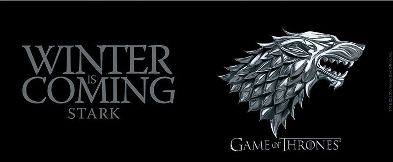

| Number | Title | Directed by | Written by | Original air date |
U.S. viewers (millions) |
|
|---|---|---|---|---|---|---|
| overall | in season | |||||
| 1 | 1 | Winter is coming | Tim Van Patten | David Benioff & D. B. Weiss | 2.22 | |
| 2 | 2 | The Kingsroad | Tim Van Patten | David Benioff & D. B. Weiss | 2.20 | |
| 3 | 3 | Lord Snow | Brian Kirk | David Benioff & D. B. Weiss | 2.44 | |
| 4 | 4 |
Cripples, Bastards, and Broken Things |
Brian Kirk | Bryan Cogman | 2.45 | |
| 5 | 5 | The Wold and the Lion | Brian Kirk | David Benioff & D. B. Weiss | 2.58 | |
| 6 | 6 | A Golden Crown | Daniel Minahan | Story by: David Benioff & D. B. Weiss Teleplay by: Jane Espenson and David Benioff & D. B. Weiss |
2.44 | |
| 7 | 7 | You Win or You Die | Daniel Minahan | David Benioff & D. B. Weiss | 2.40 | |
| 8 | 8 | The Pointy End | Daniel Minahan | George R. R. Martin | 2.72 | |
| 9 | 9 | Baelor | Alan Taylor | David Benioff & D. B. Weiss | 2.66 | |
| 10 | 10 | Fire and Blood | Alan Taylor | David Benioff & D. B. Weiss | 3.04 | |
|  | ||||||
| Winnipeg aka Winterpeg | ||||||